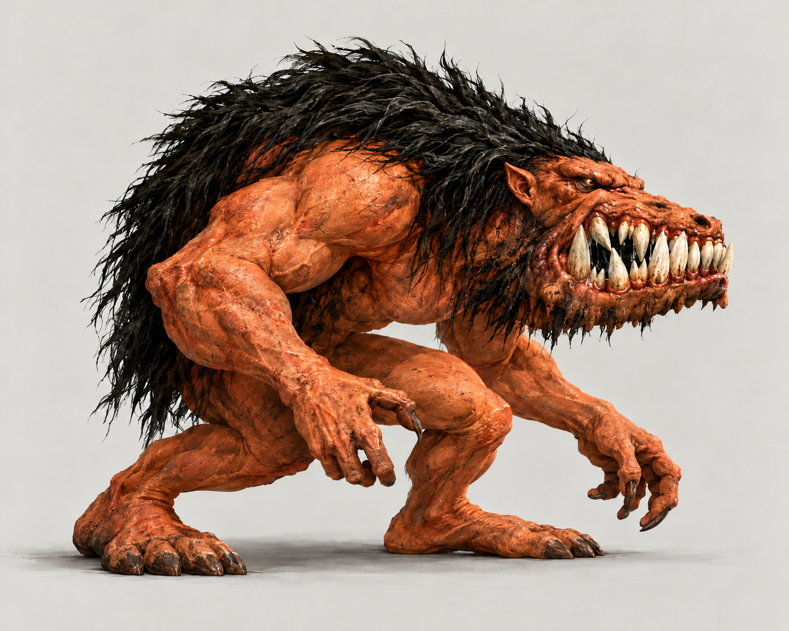KONSEPT · IKKE AKTIVERTBalokEnorm kjeve, oransje hud og svart ryggmanke. Ekstra ørehorn er fjernet i v2.Før spritesheets: Kjeve og hode må ha stabile fester gjennom bitt. Offerfragmenter beholder ridderfarge.Original 1
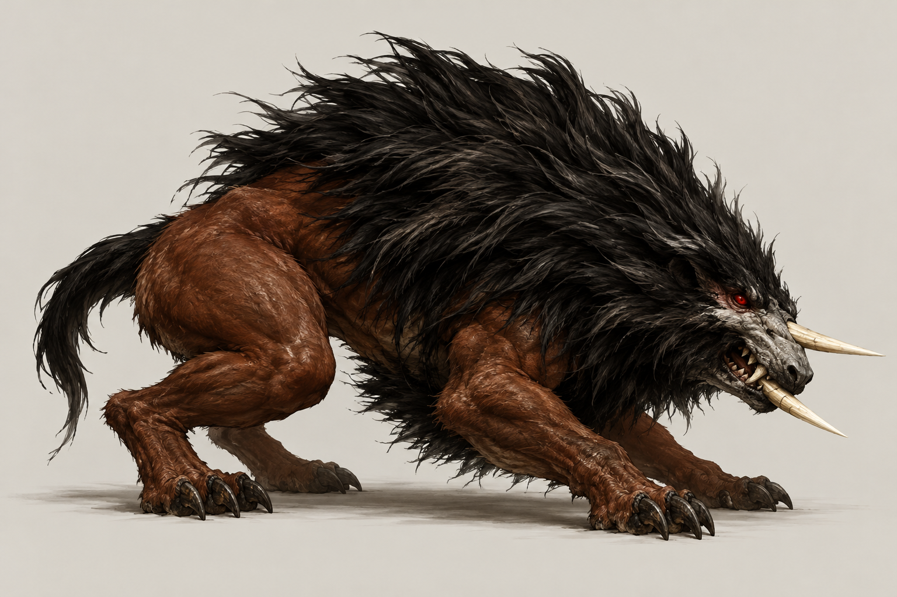KONSEPT · IKKE AKTIVERTWar BeastLav firbeint kropp, massiv svart manke, lys snute og lange lyse munnfremspring.Før spritesheets: Kontroller fremspringenes nøyaktige feste i sammensatte originalposer før fast modell.Original 1
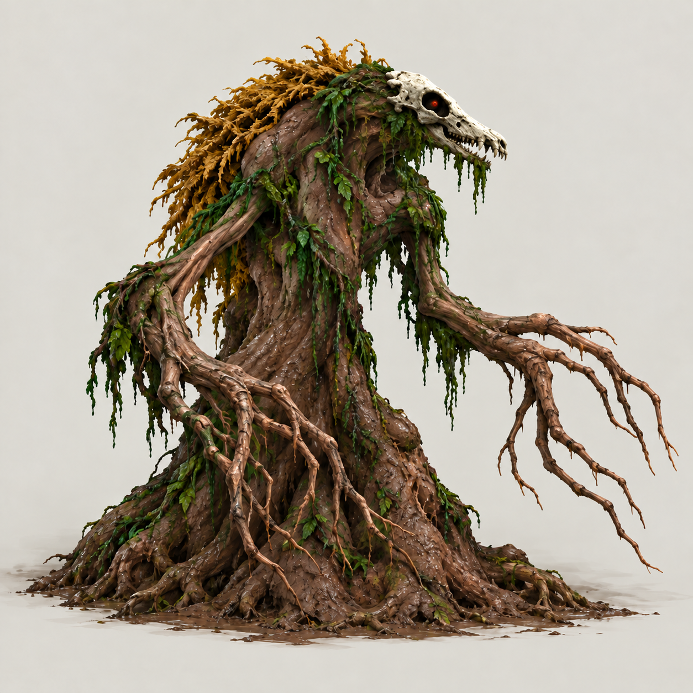KONSEPT · IKKE AKTIVERTMudmanBark, røtter og plantemateriale med avlangt lyst hode. V2 retter et for rundt skallepreg.Før spritesheets: Rotgrep, fremkomst og nedsynking følger hver originalrute. Ingen menneskeføtter.Original 1
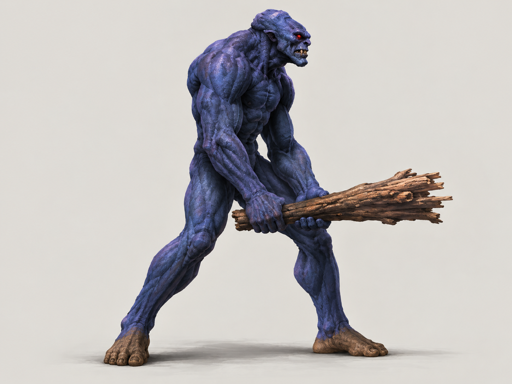KONSEPT · IKKE AKTIVERTTrollHårløs blåfiolett kropp, lange bein, røde øyne og grov treklubbe.Før spritesheets: Klubbe, hender, torso og bein må møte hverandre riktig gjennom hele slaget.Original 1
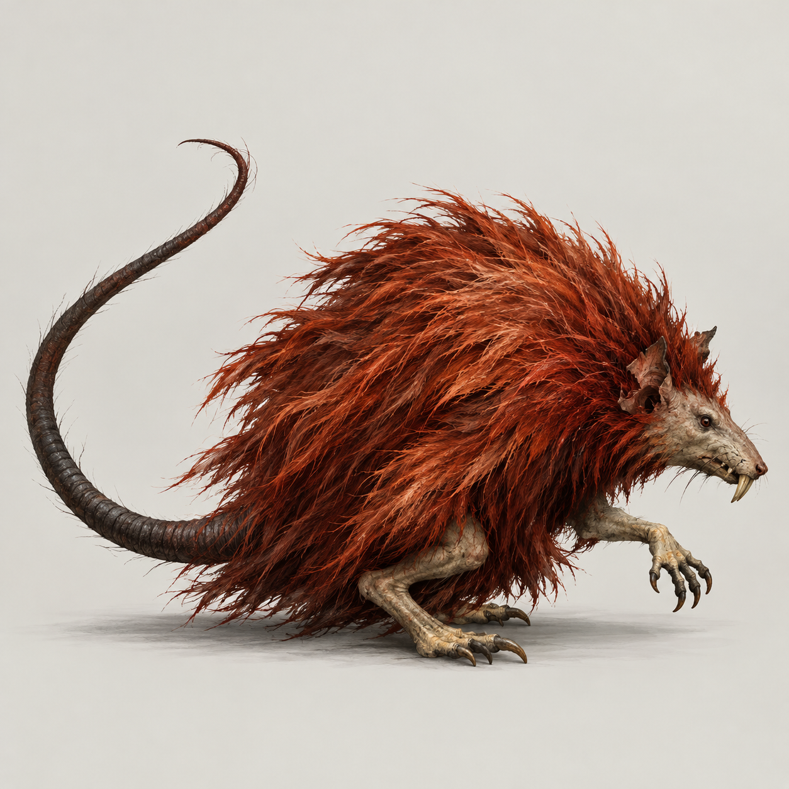KONSEPT · IKKE AKTIVERTRatmanLiten sammenkrøket pelsklump, lang snute, små bare lemmer og lang hale.Før spritesheets: Samme hode under hopp og rulling. Bladskjulet er et separat element.Original 1 Original 2
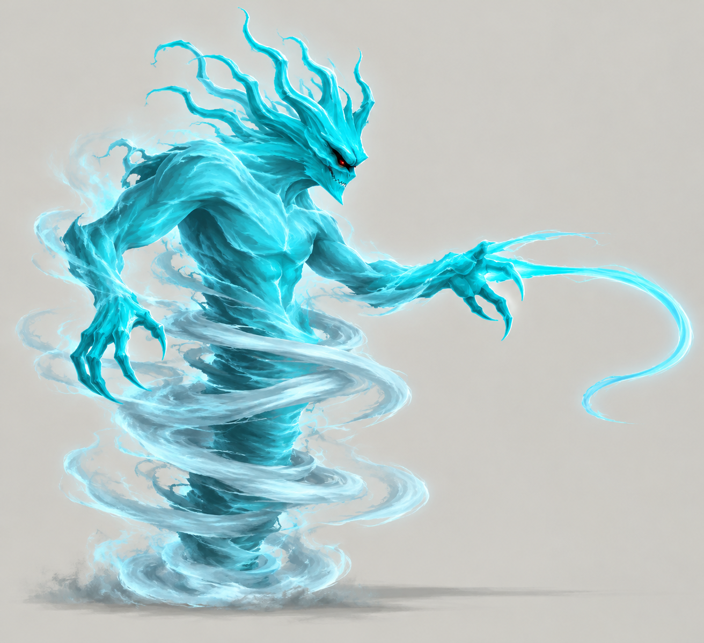KONSEPT · IKKE AKTIVERTGuardianCyan demon med klør, tendriler og blåhvit energivirvel. Foreslått overgangstilstand.Før spritesheets: Ren virvel og formet kropp må kartlegges separat. Konseptet beviser ingen bestemt rute.Original 1 Original 2 Original 3 Original 4
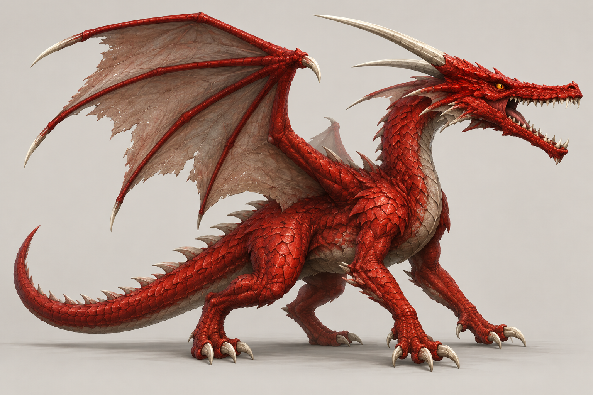KONSEPT · IKKE AKTIVERTDragonRøde skjell, gult øye, lange bakoverrettede lyse horn og matte vingemembraner.Før spritesheets: Total anatomi er delvis forslag. Original kropp og vinger må sammensettes før spritesheets.Original 1 Original 2
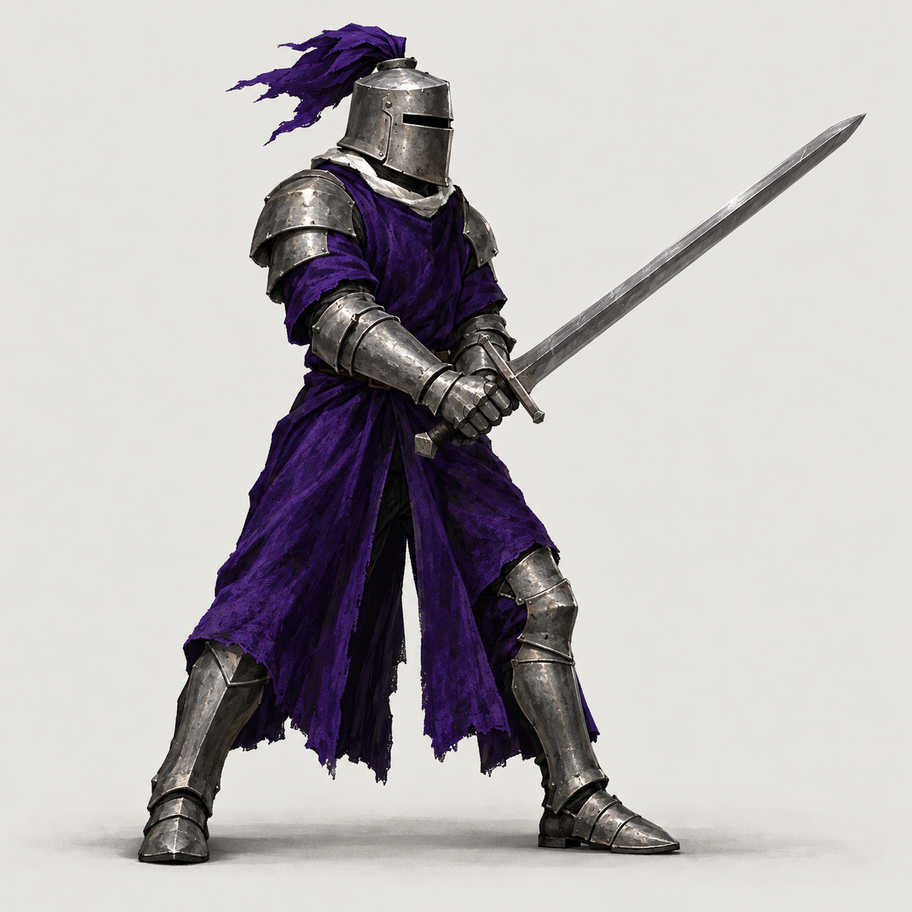KONSEPT · IKKE AKTIVERTBlack KnightLukket stålhjelm, grå rustning, mørk lilla drakt og rett sverd.Før spritesheets: Bevar den originale ridderkroppen og palettomleggingen. Ingen ny bossanatomi.Original 1
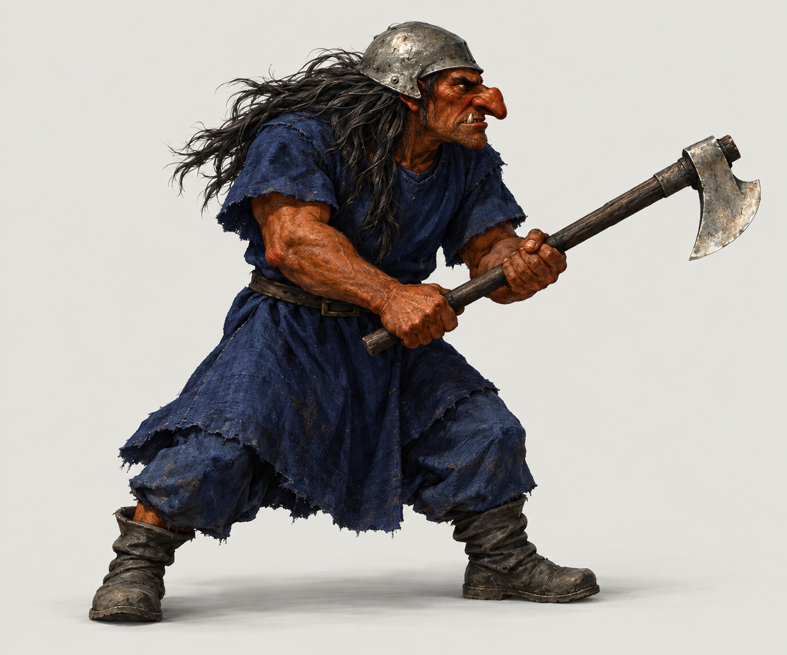KONSEPT · IKKE AKTIVERTTrogg med øksOransjebrun hud, lang krokete nese, grå hjelm, mørkt hår og blå drakt.Før spritesheets: Lys kompakt øks. Kropp og våpen bindes til originale separate ruter.Original 1 Original 2
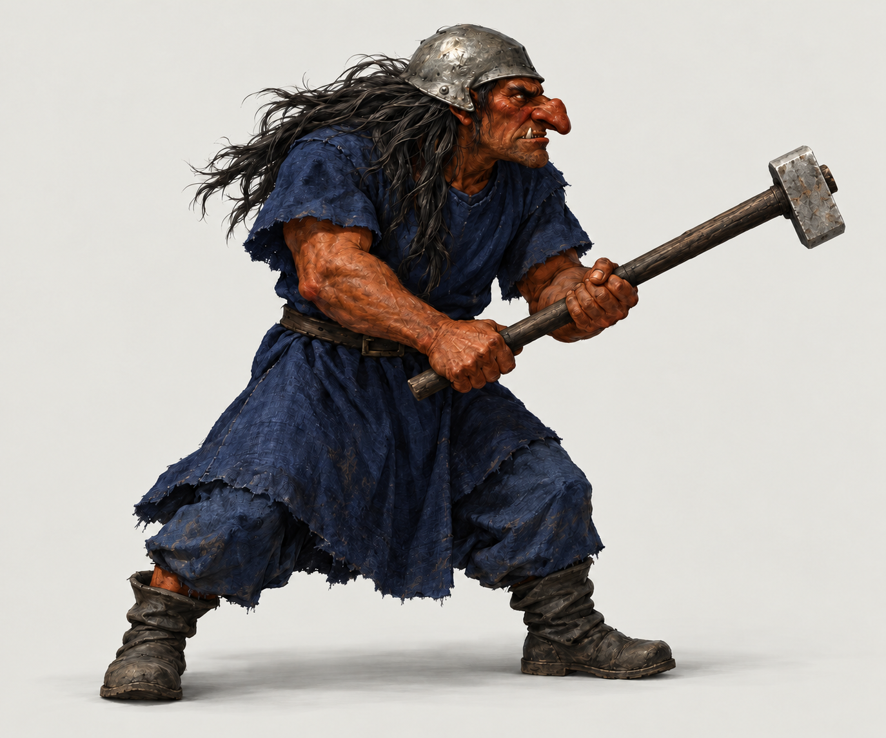KONSEPT · IKKE AKTIVERTTrogg med hammerSamme Trogg som øksen, med enkel rektangulær metallhammer.Før spritesheets: Hammeren ligger faktisk i TroggAxe2. Gjenbruk kropp bare ved identiske originalruter.Original 1 Original 2
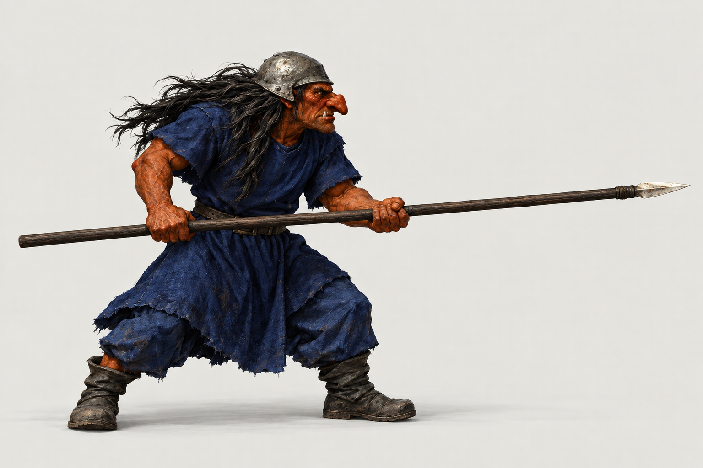KONSEPT · IKKE AKTIVERTTrogg med spydSamme Trogg, med langt mørkt skaft og liten lys spydspiss.Før spritesheets: Bevar spydlengde, håndkontakt, treffpunkt og klipping. Ikke krymp cellen rundt våpenet.Original 1 Original 2